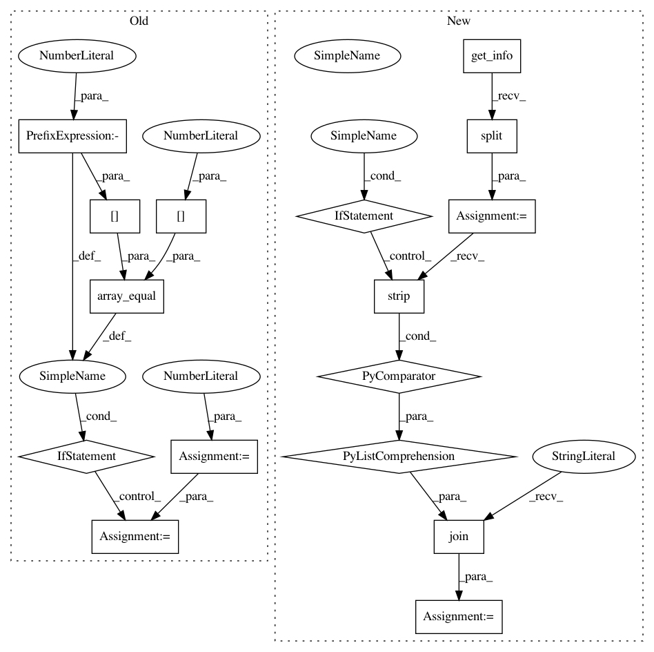

e42bf473dde3f85210ff90b24c53865663abae29,tests/meta/test_adaptive_random_forests.py,,test_adaptive_random_forests_nba,#,115
Before Change
predictions = []
true_labels = []
wait_samples = 100
correct_predictions = 0
while cnt < max_samples:
X, y = stream.next_sample()
// Test every n samples
if (cnt % wait_samples == 0) and (cnt != 0):
predictions.append(int(learner.predict(X)[0]))
true_labels.append(y[0])
if np.array_equal(y[0], predictions[-1]):
correct_predictions += 1
learner.partial_fit(X, y)
cnt += 1
last_version_predictions = [1, 1, 0, 1, 1, 0, 0, 1, 0, 1,
1, 1, 1, 0, 1, 0, 1, 1, 0, 1,
After Change
"remove_poor_atts=False, split_confidence=0.01, " \
"split_criterion="info_gain", stop_mem_management=False, " \
"tie_threshold=0.05, warning_detection_method=ADWIN(delta=0.01))"
info = " ".join([line.strip() for line in learner.get_info().split()])
assert info == expected_info
In pattern: SUPERPATTERN
Frequency: 3
Non-data size: 16
Instances
Project Name: scikit-multiflow/scikit-multiflow
Commit Name: e42bf473dde3f85210ff90b24c53865663abae29
Time: 2020-06-02
Author: 17923265+jacobmontiel@users.noreply.github.com
File Name: tests/meta/test_adaptive_random_forests.py
Class Name:
Method Name: test_adaptive_random_forests_nba
Project Name: scikit-multiflow/scikit-multiflow
Commit Name: e42bf473dde3f85210ff90b24c53865663abae29
Time: 2020-06-02
Author: 17923265+jacobmontiel@users.noreply.github.com
File Name: tests/meta/test_adaptive_random_forests.py
Class Name:
Method Name: test_adaptive_random_forests_mc
Project Name: scikit-multiflow/scikit-multiflow
Commit Name: e42bf473dde3f85210ff90b24c53865663abae29
Time: 2020-06-02
Author: 17923265+jacobmontiel@users.noreply.github.com
File Name: tests/meta/test_adaptive_random_forests.py
Class Name:
Method Name: test_adaptive_random_forests_nb